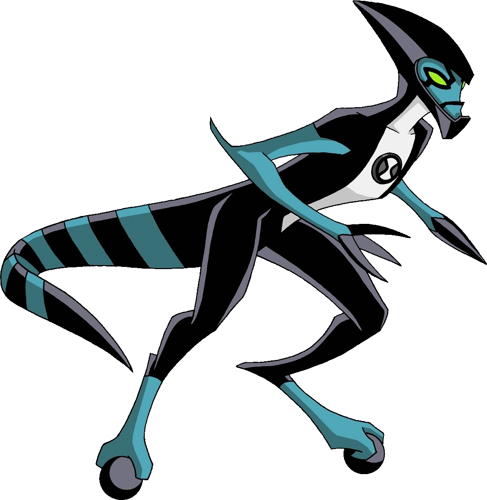

XLR8 é um dos aliens mais rápidos do universo de Ben 10, podendo chegar a 800km/h, sendo um dos aliens mais fortes. Tem um corpo reptiliano azul e preto e possuindo um capacete biológico para proteção na hora de correr e rodas sob as patas.
Com uma grande rapidez, é capaz de correr sobre a água e andar por superficies verticais, porém é fraco em combates diretos.
Espécie: Kinecelerano
Planeta de Origem: Kinet
Curiosidade:
Seu nome "XLR8" em inglês, falado, fica accelerate (acelerar em português)
